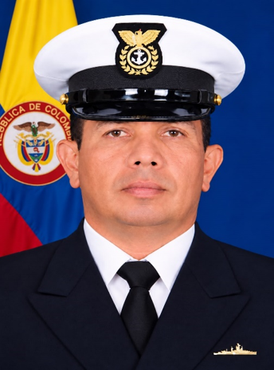

Armada Nacional de Colombia
Enero 2017 — Diciembre 2017

Rodolfo Tomás Cabrera Rodríguez
JTC · Fuerza Naval del Sur
Trayectoria
Se incorporó el 8 de enero de 1991 a la Escuela Naval de Suboficiales A.R.C. “Barranquilla”, llamada en esa época Base de Entrenamiento Naval A.R.C. “Barranquilla”, ingresa al escalafón militar como Suboficial de la gloriosa marina de Colombia el 1 de diciembre de 1991, y ascendió al grado de Jefe Técnico de Comando el 22 de marzo de 2017. Graduado en la Escuela Naval de Suboficiales como Tecnólogo Naval en Electromecánica con énfasis en motores.
Unidades
- Remolcador de Mar ARC “Andagoya”
- Patrullera ARC “CN Rafael del Castillo y Rada”
- ARC “Cartagena de Indias”
- Trasbordador Blindado de Tropa 381
- Batallón Fluvial de Infantería de Marina No. 60
- Flotilla Fluvial del Sur
- Unidad de Tarea Fluvial del Caquetá
- Fuerza de Tarea Conjunta Omega
- Base Naval ARC “Leguízamo”
- Estación de Guardacostas de Cartagena
- Comando de Guardacostas del Caribe
- Cuartel General de la Fuerza Naval del Sur
Cargos
- Motorista ARC “Andagoya”
- Motorista ARC “CN Rafael del Castillo y Rada”
- Motorista ARC “Cartagena de Indias”
- Comandante ARC TBT 381
- Jefe División de Generación y Redes Base Naval ARC “Leguízamo”
- Motorista fuera de borda Estación de Guardacostas Cartagena
- Jefe Taller de Motores Estación de Guardacostas de Cartagena
- Jefe División Mantenimiento Uniflotes Estación de Guardacostas de Cartagena
- Jefe Departamento de Mantenimiento Estación de Guardacostas de Cartagena
- Jefe de Comando Estación de Guardacostas de Cartagena
- Jefe Departamento de Ingeniería Comando Guardacostas del Caribe
- Jefe de Comando Guardacostas del Caribe
- Jefe Técnico de Comando Fuerza Naval del Sur
Condecoraciones
- Medalla Servicios Distinguidos a la Fuerza de Superficie
- Orden al Mérito Naval “Almirante Padilla” — Compañero
- Medalla por tiempo de servicio 15 años
- Orden al Mérito Militar “Antonio Nariño” — Compañero
- Medalla Servicios Distinguidos al Cuerpo de Guardacostas
- Orden al Mérito Naval “Almirante Padilla” — Caballero
- Medalla Servicios Distinguidos a la Ingeniería Naval
- Medalla por tiempo de servicio 20 años
- Medalla Servicios Distinguidos a la Armada Nacional
- Medalla Fe en la Causa Armada Nacional
- Medalla Servicios Distinguidos a las Fuerzas Militares
- Medalla por tiempo de servicio 25 años